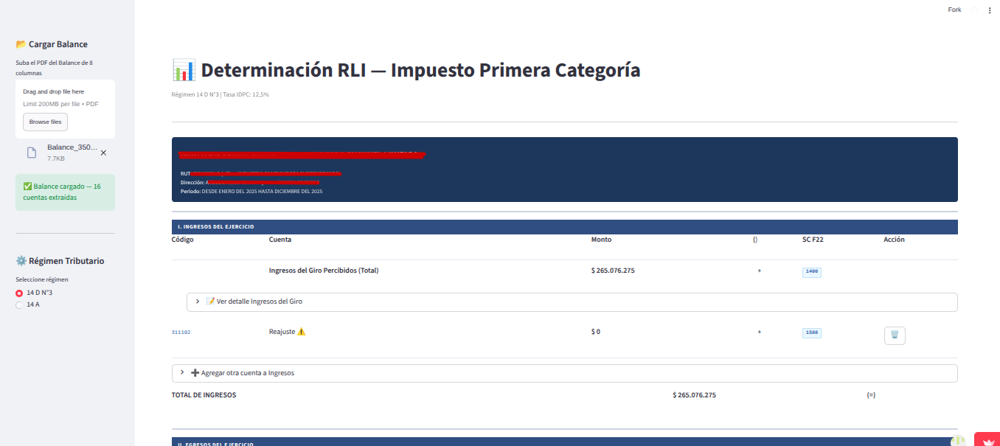
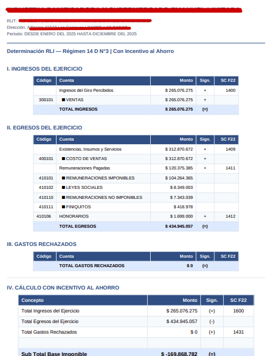

El objetivo de este proyecto es calcular automáticamente la Renta Líquida Imponible y la Base Imponible a partir de un balance en formato PDF (optimizado para Contalive, pero adaptable). Además, considera el incentivo al ahorro, ayuda con los códigos del F22 y permite exportar los resultados a PDF.

Visita el proyecto en vivo
Ir a la Aplicación WebEl sistema permite al usuario cargar un balance tributario en formato PDF. Actualmente ajustado para el software Contalive, pero diseñado con una arquitectura que facilita su adaptación a cualquier otro formato requerido.
Extrae y procesa los datos del balance para calcular de forma directa y precisa la Renta Líquida Imponible y estructurar la base imponible del Impuesto de Primera Categoría.
Un módulo integrado considera el beneficio tributario del incentivo al ahorro (Art. 14E u homólogos que correspondan), aplicando la rebaja correspondiente directamente sobre el cálculo final.
Simplifica enormemente la declaración final de renta al entregar una guía clara con los códigos del Formulario 22 (F22) para facilitar la posterior transcripción y cuadratura ante el SII.
Todos los cálculos realizados, incluyendo los detalles de renta, base imponible e incentivos, pueden consolidarse en un reporte en PDF que el usuario descarga para su propio resguardo y archivos contables.
Subida de Balances y Configuración: Interfaz moderna e intuitiva en Streamlit donde el contador o analista sube su balance en PDF, especificando configuraciones básicas para el procesamiento inteligente de la información.

Visualización de Cálculos Detallados: Muestra paso a paso la conformación de la RLI, deducciones, incentivo al ahorro y un mapeo de sugerencia hacia los códigos del Formulario 22 de Renta, listo para exportación.